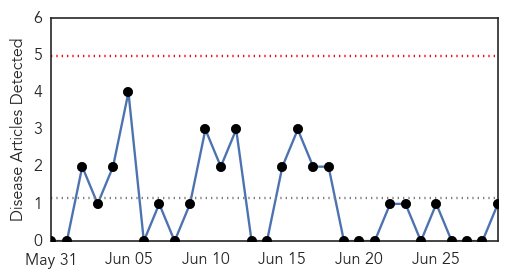

Pertussis
30-Day Web Trend
0 alerts, 0 warnings
30-Day Twitter Trend
0 alerts, 0 warnings
Article Locations
Article Confidences
Top Articles:
- 0.874
- Diphtheria health scare in Spain: Six-year-old boy who contracted diphtheria dies in hospital
- 0.774
- Unvaccinated 6-Year-Old Boy Dies From Diphtheria : Latinos Health News : Latinos Health
- 0.692
- Boy dies of diphtheria in Spain, parents rejected vaccine :: WRAL.com
- 0.670
- Boy dies of diphtheria in Spain, parents rejected vaccine
- 0.591
- Local suspected whooping cough cases hit 49
Top Tweets:
-
No tweets found for Jun 29, 2015
Chikungunya
30-Day Web Trend
0 alerts, 0 warnings

30-Day Twitter Trend
0 alerts, 0 warnings

Article Locations
Article Confidences

Top Articles:
Top Tweets:
-
No tweets found for Jun 29, 2015